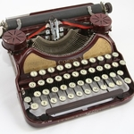
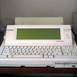

- 1870

- 1873

- 1902

- 1910

- 1923

- 1925

- 1927
- 1935

- 1954

- 1970

- 1992
Typewriters
A typewriter is a mechanical or electromechanical machine for writing in characters similar to those produced by printer's movable type by means of keyboard-operated types striking a ribbon to transfer ink or carbon impressions onto paper. Typically one character is printed on each keypress. The machine prints characters by making ink impressions of type elements similar to the sorts used in movable type letterpress printing. At the end of the nineteenth century the term typewriter was also applied to a person who used such a machine.
After their invention in the 1860s, typewriters quickly became indispensable tools for practically all writing other than personal correspondence. They were widely used by professional writers, in offices, and for business correspondence in private homes. By the end of the 1980s, word processors and personal computers had largely displaced typewriters in most of these uses in the Western world, but as of the 2010s the typewriter is still prominent in many parts of the world, including India.
Click on the images to view more about the typewriter from that time
Hansen Writing Ball
In 1865, Rev. Rasmus Malling-Hansen of Denmark invented the Hansen Writing Ball, which went into commercial production in 1870 and was the first commercially sold typewriter. It was a success in Europe and was reported as being used in offices in London as late as 1909. Malling-Hansen used a solenoid escapement to return the carriage on some of his models which makes him a candidate for the title of inventor of the first "electric" typewriter.
According to the book Hvem er skrivekuglens opfinder? (English: Who is the inventor of the Writing Ball?), written by Malling-Hansen's daughter, Johanne Agerskov, in 1865, Malling-Hansen made a porcelain model of the keyboard of his writing ball and experimented with different placements of the letters to achieve the fastest writing speed. Malling-Hansen placed the letters on short pistons that went directly through the ball and down to the paper. This, together with the placement of the letters so that the fastest writing fingers struck the most frequently used letters, made the Hansen Writing Ball the first typewriter to produce text substantially faster than a person could write by hand.
The Hansen Writing Ball was produced with only upper-case characters. The Writing Ball was used as a template for inventor Frank Haven Hall to create a derivative that would produce letter prints cheaper and faster.
Malling-Hansen developed his typewriter further through the 1870s and 1880s and made many improvements, but the writing head remained the same. On the first model of the writing ball from 1870, the paper was attached to a cylinder inside a wooden box. In 1874, the cylinder was replaced by a carriage, moving beneath the writing head. Then, in 1875, the well-known "tall model" was patented, which was the first of the writing balls that worked without electricity. Malling-Hansen attended the world exhibitions in Vienna in 1873 and Paris in 1878 and he received the first-prize for his invention at both exhibitions.
Sholes and Glidden Typewriter
The first typewriter to be commercially successful was invented in 1868 by Americans Christopher Latham Sholes, Frank Haven Hall, Carlos Glidden and Samuel W. Soule in Milwaukee, Wisconsin, although Sholes soon disowned the machine and refused to use, or even to recommend it. It looked "like something like a cross between a piano and a kitchen table." The working prototype was made by the machinist Matthias Schwalbach. The patent (US 79,265) was sold for $12,000 to Densmore and Yost, who made an agreement with E. Remington and Sons (then famous as a manufacturer of sewing machines) to commercialize the machine as the Sholes and Glidden Type-Writer.
This was the origin of the term typewriter. Remington began production of its first typewriter on March 1, 1873, in Ilion, New York. It had a QWERTY keyboard layout, which because of the machine's success, was slowly adopted by other typewriter manufacturers. As with most other early typewriters, because the typebars strike upwards, the typist could not see the characters as they were typed.
Picture 3
Picture 4
Picture 5
Picture 6
Picture 7
Picture 8
Picture 9
Picture 10
Picture 11